7°
EXPLORACIÓN
¿Para qué es este momento?
Antes de aprender nuevas formas de operar con números enteros, vas a observar qué ocurre cuando una misma operación se repite varias veces.
No necesitas usar reglas ni fórmulas. Aquí lo importante es pensar, observar y describir lo que ocurre.
Situación 1: Repetir una misma acción
Un estudiante realiza las siguientes operaciones:
- 2×2
- 2×2×2
- 2×2×2×2
Responde:
- ★ ¿Qué tienen en común todas las operaciones?
- ★ ¿Qué cambia de una operación a otra?
- ¿Cómo describirías estas operaciones sin escribir todos los signos de multiplicación?
Situación 2: ¿Qué pasa con los negativos?
Observa:
- (−2)×(−2)
- (−2)×(−2)×(−2)
- (−2)×(−2)×(−2)×(−2)
Responde:
- ★ ¿El resultado cambia cuando se agregan más factores?
- ★ ¿El signo del resultado siempre es el mismo?
- ¿Qué crees que influye en que el resultado sea positivo o negativo?
📊Observa cómo cambian los resultados cuando se repite la multiplicación con números positivos y negativos:
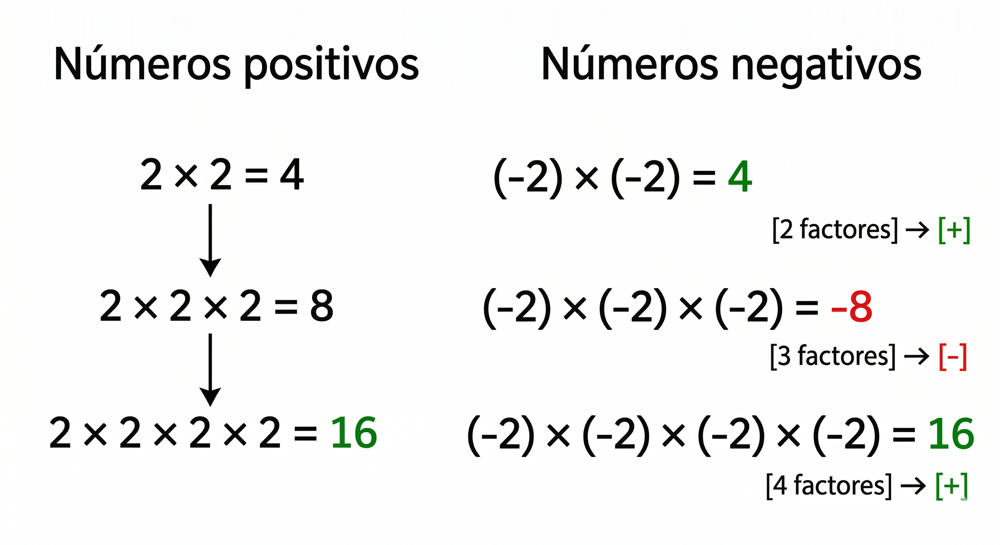
Esta representación te puede ayudar a identificar patrones antes de continuar con la siguiente situación.
Situación 3: Crecimiento repetido
Una bacteria se duplica cada hora.
- Hora 1: hay 2 bacterias
- Hora 2: hay 2×2
- Hora 3: hay 2×2×2
Responde:
- ★ ¿Qué está ocurriendo con la cantidad de bacterias?
- ¿Cómo podrías representar este crecimiento sin escribir tantas multiplicaciones?
- Si pasaran 5 horas, ¿cómo escribirías la operación?
Cierre de exploración
Responde con tus propias palabras:
- ¿Qué significa repetir una multiplicación varias veces?
- ¿Crees que existe una forma más corta de escribir esas repeticiones?
ANALIZA
¿Qué vas a hacer ahora?
Vas a analizar con más detalle lo que ocurre cuando un número se multiplica varias veces, especialmente cuando el número es negativo.
Aquí no vas a memorizar reglas, sino a buscar relaciones y patrones.
Actividad 1: Observa y completa
Completa la siguiente tabla:
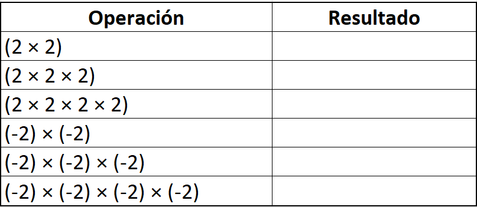
Responde:
- ★ ¿Qué ocurre con el resultado cuando se repite más veces la multiplicación?
- ★ ¿Qué diferencias encuentras entre trabajar con números positivos y negativos?
- ¿En qué casos el resultado es positivo? ¿En cuáles es negativo?
📊Observa cómo se organizan los resultados que acabas de obtener:
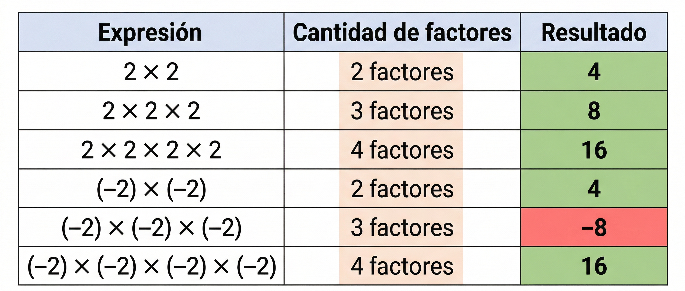
Analiza qué relación encuentras entre la cantidad de factores y el signo del resultado antes de continuar.
Actividad 2: ¿Importa la cantidad de veces?
Analiza los siguientes casos:
- Caso A: (−3)×(−3)
- Caso B: (−3)×(−3)×(−3)
Responde:
- ★ ¿Qué cambia entre el caso A y el caso B?
- ★ ¿Cómo cambia el signo del resultado?
- ¿Qué crees que ocurre cuando se repite un número negativo un número par de veces?
- ¿Y cuando se repite un número impar de veces?
Actividad 3: Compara situaciones
Observa:
- 4×4×4
- (−4)×(−4)×(−4)
Responde:
- ★ ¿En qué se parecen los resultados?
- ★ ¿En qué se diferencian?
- ¿Qué papel juega el signo del número?
Cierre del análisis
Completa con tus ideas:
- Cuando repito una multiplicación varias veces, estoy…
- El signo del resultado depende de…
CONOCE ALGO NUEVO
¿Qué vas a aprender?
Vas a aprender a representar multiplicaciones repetidas de una forma más corta, usando la potenciación, y a reconocer la radicación como la operación que permite encontrar el número que se ha multiplicado varias veces.
1. ¿Qué es la potenciación?
Cuando un número se multiplica por sí mismo varias veces, podemos escribir esa operación de forma abreviada.
Ejemplo:
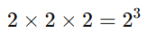
Esto se lee: “dos elevado a la tres”
Elementos de una potencia
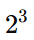
- Base: 2 → número que se repite
- Exponente: 3 → cantidad de veces que se repite
2. ¿Cómo se calcula una potencia?
Se multiplica la base tantas veces como lo indica el exponente.
Ejemplos:
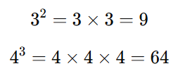
3. Potencias con números negativos
Cuando la base es negativa, es importante observar cuántas veces se repite.
Ejemplos:
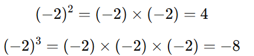
Observa:
- Si el exponente es par, el resultado es positivo.
- Si el exponente es impar, el resultado es negativo.
📊 Observa cómo influye el exponente en el signo del resultado:
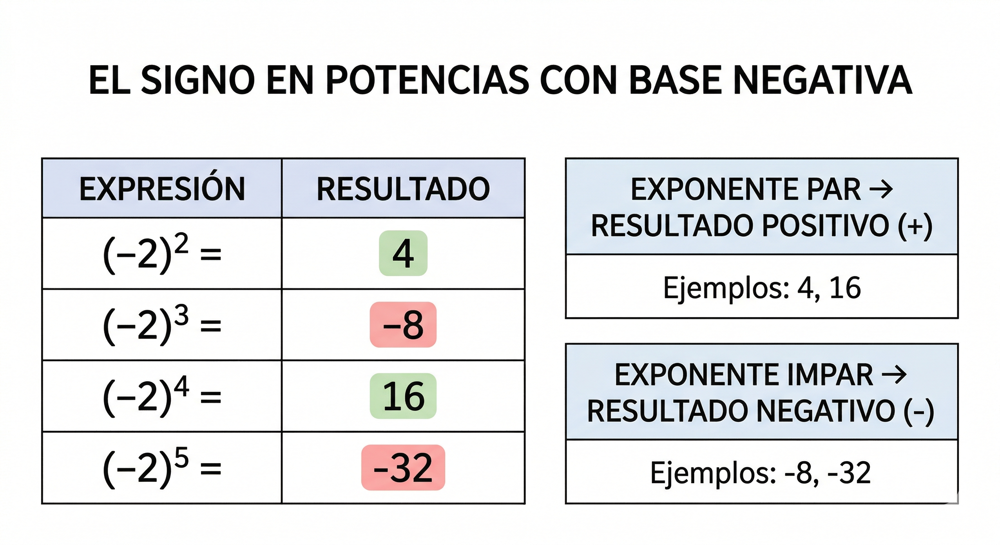
Fíjate en cómo cambia el signo del resultado según el exponente y relaciónalo con los ejemplos anteriores.
4. La radicación
La radicación es la operación que permite encontrar qué número se multiplicó varias veces para obtener un resultado.
Ejemplos:
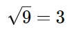
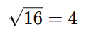
5. Relación entre potenciación y radicación
Estas dos operaciones están relacionadas:
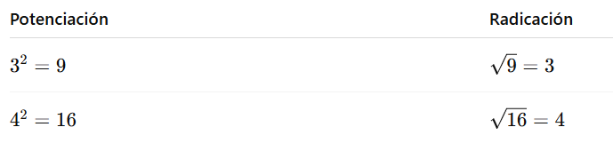
La radicación permite encontrar la base cuando conocemos el resultado.
Cierre conceptual
Completa con tus palabras:
- Potenciar un número significa…
- La raíz cuadrada de un número es…
ACTIVIDADES DE APRENDIZAJE
¿Qué vas a hacer ahora?
Vas a aplicar lo que aprendiste sobre:
- potenciación de números enteros
- comportamiento del signo
- relación entre potenciación y radicación
Trabaja con atención y explica tus respuestas cuando se indique.
1. Potencias básicas
Calcula cada potencia.
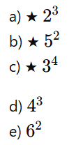
2. Potencias con números negativos
Calcula:
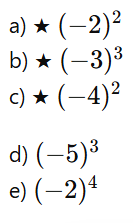
3. Analiza el signo sin resolver completamente
Indica si el resultado será positivo (+) o negativo (−).
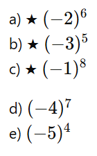
4. Completa la tabla
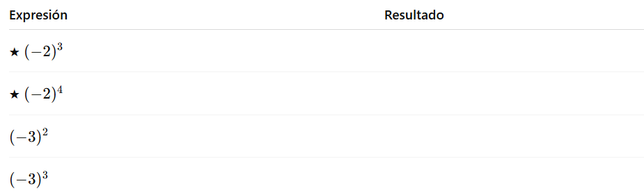
5. Radicación básica
Calcula:
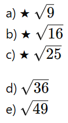
6. Relación entre potenciación y radicación
Completa:
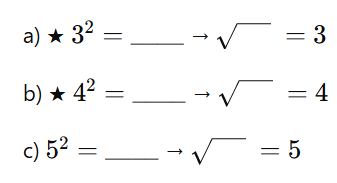
7. Explica con tus palabras
Responde:
a) ★ ¿Qué significa elevar un número a una potencia?
b) ★ ¿Por qué algunas potencias con números negativos dan resultado positivo?
8. Situación problema
Una población de bacterias se duplica cada hora.
a) ★ Si comienza con 2 bacterias, ¿cuántas habrá después de 3 horas?
b) ¿Y después de 4 horas?
c) Explica cómo se relaciona esta situación con la potenciación.
Reto adicional
- ¿Cuál es el resultado de
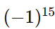
? Explica por qué. - Escribe una potencia que:
- tenga resultado negativo
- tenga exponente par
¿Es posible? Explica.
FUENTES BIBLIOGRÁFICAS
Ministerio de Educación Nacional. (2006). Estándares básicos de competencias en matemáticas. Bogotá, Colombia: MEN.
Ministerio de Educación Nacional. (2016). Derechos básicos de aprendizaje en matemáticas: grados 6° y 7°. Bogotá, Colombia: MEN.
Ministerio de Educación Nacional. (2017). Vamos a aprender matemáticas 7. Bogotá, Colombia: MEN.